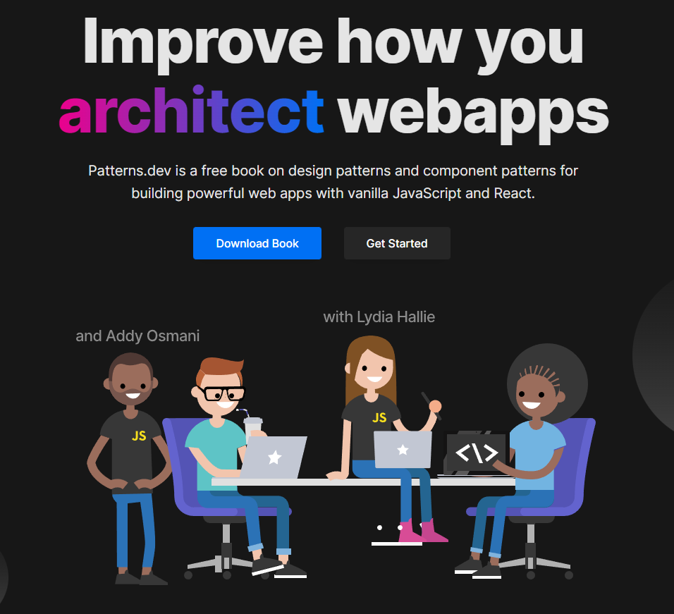

When working on large scale projects, we often run into difficulties such as lack of communication and cohesion. Teammates may often code certain ways with odd coding conventions. ESlint can only do so much, but it can only mitigate naming issues and spacing. When it comes to complex coding problems we require a general consensus/rule to follow. This we use design patterns. Design patterns are used to keep bad patterns from repeating itself and to make good ones repeat. In this chapter we learned many different design patterns that make coding projects more cohesive and less conflicting.
With this new found tool, we were able to apply some of the knowledge to our current project Aloha Plants. A common pattern we utilized is known as the observer pattern. With this pattern we subscribe to the database. We are using an observable which notifies all our variables, the observers, when the data has been retrieved from the db. This allows us to create separation of data to allow the code to continuously work while awaiting for data response. This idea is similar to asynchronous calls in Javascript.
Another strong design pattern we utilize is the publish-subscribe design pattern. This allows us to publish specific data to the front end to utilize, but we can only access these databases when we subscribe to the database we need. This is strong because it allows us to segment what type of data we want to expose to the front end instead of grabbing it all at once. Publish and subscribing is a very large part of our project due to meteor’s database structure.
This consistency throughout the project helps with my coding because it allows me to identify problems/understand code my teammates create. As I move further into my coding career I realize I need more skills other than my ability to problem solve. It’s fascinating seeing the different learning curves in software engineering. In the future when working on projects I will practice using these new found design patterns at least once.